Identifying High-Demand Utilities in Virginia: Statistical Learning and National Comparative Analysis in the Era of Data Centers
Data Centers
Power Grid
1 Abstract
The rapid expansion of data centers in Virginia has raised concerns about rising electricity consumption and shifting load patterns especially in northern counties of the state. This study leverages a statistical learning approach to identify high-demand electric utilities and to compare Virginia’s demand characteristics with national trends. Using ten years of U.S. Energy Information Administration (EIA-861) data, we construct engineered features such as commercial sales ratios, per-customer intensity metrics, and loss ratios—and compute a composite Intensity Score to classify utilities exhibiting unusually high load profiles.
Multiple supervised models are evaluated, including logistic regression, standardized logistic regression, ridge-penalized logistic regression, classification trees, random forests, and K-nearest neighbors. Unsupervised methods (PCA and K-means) further reveal multivariate structure and clustering patterns among utilities. Findings show that while raw and standardized logistic models suffer from severe separation and unstable coefficient estimates, ridge logistic regression and tree-based models provide the most reliable predictive performance. When applied to 2023 data, the ridge model identifies Virginia as having a relatively high concentration of load-intensive utilities once weighted by retail sales and commercial activity, aligning with observed data center growth.
The study demonstrates how statistically rigorous, machine-learning-based classification can quantify evolving electricity demand patterns and provide state-level comparisons relevant to infrastructure planning. Limitations include incomplete utility-level metadata, non-uniform reporting across states, and the inability to observe direct data center loads. Nevertheless, the results provide a replicable framework for evaluating future changes in grid demand as data center development continues.
2 Introduction & Background
2.1 Motivation
Over the past few decades, technological output has risen steadily. That gradual climb transformed into exponential growth with the advent of cloud computing, and now with the acceleration of the AI era that trajectory is poised to surge even faster. This rapid expansion is widely recognized. What’s far less understood, however, is the critical infrastructure that makes all of it possible. At the center of this digital revolution lies the often overlooked backbone of modern society: the power grid. It is the heartbeat of every computation, the lifeblood behind the flow of ones and zeros. Without this essential utility the modern world as we know it would come to a halt. And no where is that more true than in the state of Virginia.
2.2 Virginia’s Internet & Data Boom
Over the past several decades, Virginia has evolved from a strategically located government corridor into the epicenter of the modern internet. This transformation began in the early 1990s, when the Metropolitan Area Exchange–East (MAE-East)—one of the original four Network Access Points funded by the National Science Foundation—was established in Northern Virginia. Its proximity to federal agencies and research institutions such as DARPA, whose ARPANET project laid the foundations for the internet, positioned the region as a natural hub for digital networks. Over time, transatlantic subsea cable systems like MAREA-BRUSA, landing in Virginia Beach, further strengthened the state’s role in global connectivity [1].
Today, that historical advantage has scaled into an unmatched concentration of data centers, making Virginia the digital heart of the world. An estimated 70% of global internet IP traffic is created in or routed through Loudoun County’s famed “Data Center Alley,” cementing Ashburn as the world’s central point for cloud and interconnection [2]. Virginia now hosts the largest cluster of data centers anywhere on Earth—surpassing Texas, California, and Illinois—with rapid expansion fueled by skyrocketing demand for cloud computing, AI workloads, and global digital services [3]. This boom is supported in part by Dominion Energy’s historically competitive electricity prices, which helped attract and retain power-intensive facilities. But it also places unprecedented strain on the state’s power grid: the very infrastructure that sustains the flow of computation. As AI and cloud demands continue to accelerate, Virginia’s electricity consumption is set to become one of the most consequential factors shaping both its economic future and the stability of its energy systems [1].
2.3 Virginia’s Power Demands & Hyperscaler’s Demand for Data
Virginia’s data center ecosystem has expanded at an unprecedented pace, driven largely by the accelerating demand for cloud computing and AI workloads. With more than 24,000 megawatts of planned data center capacity, Virginia surpasses every other market in the world—by more than a factor of three—in total expected power demand [3]. This explosive growth reflects the state’s long-standing role as the heart of global internet traffic, as well as its strategic appeal to the companies building the modern digital economy. Nowhere is this more evident than in Northern Virginia, where annual data center absorption has shattered global records; the region reached 270 MW of bookings in 2018, while no other market worldwide has ever exceeded 70 MW in a single year [2].
At the center of this surge are the hyperscalers1, or in other words major cloud and platform providers such as Microsoft, Google, Meta (Facebook), Apple, Oracle, IBM, Yahoo!, LinkedIn, Alibaba, Uber, and Dropbox. These companies require immense and rapidly scalable infrastructure, with hyperscale leases often ranging from 10 to 20 megawatts or more for a single deployment. The resulting demand for data is fueled by the relentless expansion of e-commerce, wireless networks, social media, streaming content, SaaS platforms, artificial intelligence, machine learning, gaming, virtual reality, and the Internet of Things. Collectively, these forces make Virginia not just a data center leader, but the world’s central engine for digital power consumption [1].
2.4 The Fragile Power Grid
The power grid is essentially a giant, interconnected system that moves electricity from where it’s generated to where it’s needed. Power plants feed electricity into long-distance high-voltage transmission lines, which deliver power to substations where transformers reduce the voltage for safe distribution to homes, businesses, and—more recently—massive data centers. Because electricity cannot be stored easily at grid scale, supply and demand must remain in perfect balance at every moment. This requires constant coordination among utilities, transmission operators, and regional balancing authorities to maintain stability. When demand surges faster than supply, the grid becomes stressed, increasing the risk of brownouts or outages [4].
This balancing act becomes especially challenging in states like Virginia, where hyperscale data centers consume tens of megawatts each—orders of magnitude more than typical commercial users. As Virginia has become home to the world’s largest concentration of data centers, the strain on its power system has expanded accordingly. Each new facility adds continuous, around-the-clock demand that the grid must support without interruption. This is why long-term planning for new generation, transmission upgrades, and regional reliability is becoming central to Virginia’s energy future: the digital infrastructure powering cloud computing, AI, and global internet traffic can only grow if the physical grid underneath it can keep up.
To understand how these pressures play out across the country, it is helpful to situate Virginia within the broader structure of the United States energy landscape. The graphic below shows the U.S. Census Regions and Divisions, which group the nation into four major regions and nine divisions commonly used for national energy, economic, and demographic analysis.

2.5 What Our Research Contributes
Taken together, Virginia’s outsized role in global internet infrastructure, the explosive growth of hyperscale data centers, and the increasing fragility of the power grid form the backdrop for the analysis that follows. As demand for AI, cloud computing, and digital services accelerates, understanding how this demand translates into regional electricity usage becomes critical—not only for Virginia but for the nation. This study seeks to examine how Virginia’s utilities compare to those across the United States, identify whether data-center-driven growth produces distinctive load patterns, and explore the emerging pressures placed on the grid as a result. By combining national utility data with Virginia-specific trends, our goal is to measure where Virginia stands today, how its electricity profile is changing, and what these shifts may imply for energy planning, reliability, and the future of the digital economy.
3 Data
3.1 Dataset Overview
For this analysis we used the Annual Electric Power Industry Report (Form EIA-861) which is a U.S. government survey (considered the Census for Utilities) conducted by the Energy Information Administration (EIA) that collects detailed data from electric utilities on retail sales, revenue, and other key aspects of the electric power industry. It provides information on energy sources, demand-side management, net-metering, and other operational data to help monitor the industry’s status and trends [5].
Originally we wanted to know about the impact of data centers in local communities in northern VA, had reached out to several city planners, they responded back but revealed that getting specific data on individual data centers would require coordination with individual commercial power supply companies and the individual data centers themselves which would be difficult or impossible to obtain given various NDAs that would need to be signed and potential limitations on what we could share. Alas, the annually released data that is generated compiled by the EIA contains the main companies we are interested in at least their bulk aggregated numbers which will be discussed later. For example, doing a little research online revealed that the utility named Virginia Electric & Power Co which is found in the data is really part of Dominion Energy which is one of the biggest power utilities in Virginia. The dataset also allows for studying behavioral indicators identifying utilities that exhibit data center like pattern such as:
- High commercial load
- Very high commercial electricity sales
- Large sales per customer
- High commercial sales per commercial customer
These variables become proxies for “data-center–like” behavior.
A data dictionary2 of the various data elements used in this analysis can also be referenced.
3.2 Limitations
The dataset does have some obvious limitations. For one, we are looking at a yearly aggregation of data which provides a very course view of the data. This limitation does now allow us to view individual data centers or even the break down of the individual contributors of what make up a utility. There might be some missing data points as well. Some private commercial companies might not have released certain data in the survey which might leave gaps in the analysis and greatly impact the value of our model’s predictions. Despite these limitations, the EIA-861 data has been used in several analysis reports and can be viewed as a reliable data source for understanding macro trends seen in the United States power grid. Later on in the analysis section we will construct various methods of overcoming these limitations however crude they might be.
3.3 Data Cleaning, Processing & Assumptions
We initially started our analysis on the 2017 EIA-861 curated dataset developed by the CORGIS Dataset Project [6]. However, when comparing the numbers for 2017 to the original data source the numbers were off. This might have been due to updates to upstream data that never reached the curated dataset. After this discovery we created a python script to regenerate the same exact dataset (same fields as the CORGIS Dataset) not only for 2017 but for 10 years worth of data. So 2015 to 2015. This script basically parsed each of the zipped files from source and extracted data from 3 different schedules:
- Operational Data - The data containing aggregate operational data for the source and disposition of energy and revenue information from each electric utility.
- Utility Data - The data containing information on a utility’s North American Electric Reliability (NERC) regions of operation. The data also indicate a utility’s independent system operator (ISO) or regional transmission organization (RTO) and whether that utility is engaged in any of the following activities: generation, transmission, buying transmission, distribution, buying distribution, wholesale marketing, retail marketing, bundled service, or operating alternative-fueled vehicles.
- Sales to Ultimate Customers - The data containing revenue, sales (in megawatthours), and customer count of electricity delivered to end-use customers by state, sector, and balancing authority. A state, service type, and balancing authority-level adjustment is made for non-respondents and for customer-sited respondents.
When it comes to data cleaning we had to handle the following and make some assumptions:
- In EIA-861 spreadsheets a dot (.) could represent data that was suppressed (as mentioned before with private companies), not available, or did not meet a certain threshold value. For these values we decided to make zero but might use some form of data imputation to fill these in.
- We found only a handful of empty values in the state field. We dropped these rows as knowing where the utility is located was critical to the analysis.
3.4 Derived Features - Feature Engineering
We define the following engineered variables used throughout the analysis. Much of these variables are based on potentially biased opinions of what we might expect a data center like conditions to look like.
3.4.1 Commercial Ratio
Measures how much of a utility’s total load comes from the commercial sector. High ratios suggest large commercial customers such as data centers. \[ \text{Commercial\_Ratio} \;=\; \frac{\text{Commercial Sales}}{\text{Total Sales}} \]
3.4.2 Sales per Customer
Captures average consumption intensity across all customers. We would expect data centers to produce extremely high sales relative to customer count, making this a strong signal. \[ \text{SalesPerCustomer} \;=\; \frac{\text{Total Sales}}{\text{Total Customers}} \]
3.4.3 Commercial Sales per Commercial Customer (SPC)
Measures electricity use per commercial customer. Data centers typically appear as a small number of commercial customers with very high consumption, pushing this metric upward. \[ \text{Commercial\_SPC} \;=\; \frac{\text{Commercial Sales}}{\text{Commercial Customers}} \]
3.4.4 Losses Ratio
Represents distribution and transmission losses relative to total usage. Extremely high-volume industrial or data center load can shift loss3 patterns on the grid.[7] \[ \text{Losses\_Ratio} \;=\; \frac{\text{Losses}}{\text{Total Uses}} \]
3.4.5 Log-Transformed Size Features
Log transforms stabilize variance and capture utility scale without being dominated by extreme outliers. During our EDA we discovered some issues with the data. Total customers and total sales vary by several orders of magnitude across U.S. utilities. Some are tiny rural co-ops; others (like Dominion) serve millions. The log transformation helps to mitigate these skewness issues and improves stablity in our modeling. In this study, logging these variables prevents large utilities from overwhelming the models and provides more interpretable patterns across the full national dataset. \[ \log(\text{Total\_Customers}), \qquad \log(\text{Total\_Sales}) \]
3.4.6 Composite Intensity Score
Combines three load-intensity metrics (Commercial Ratio, SPC, SalesPerCustomer) into a single standardized indicator of “data-center–like” consumption profiles.
Each variable above is standardized to a z-score. The composite Intensity Score is then defined as:
\[ \text{IntensityScore} \;=\; z(\text{Commercial\_Ratio}) \;+\; z(\text{SalesPerCustomer}) \;+\; z(\text{Commercial\_SPC}) \]
3.4.7 High-Demand Label
Identifies the top decile of utilities exhibiting exceptionally intense commercial electricity use those most likely associated with data center load characteristics.
Utilities falling in the top 10% of the Intensity Score distribution are classified as high-demand:
\[ \text{HighDemand} = 1 \quad\text{if}\quad \text{IntensityScore} \ge Q_{0.90}(\text{IntensityScore}) \]
and otherwise:
\[ \text{HighDemand} = 0 \]
3.5 Exploratory Data Analysis
The number of reporting utilities varies substantially by state.
Figure Figure 2 shows the distribution of utilities across states in 2023, with Virginia highlighted for comparison. As you can see, Texas, California and New York are highly skewed and represent the vast majority of the number of utilities. In order to compare Virginia to the rest of the states we will need to handle this.
We also examine the mix of utility business types (investor-owned, municipal, cooperative, etc.).
Figure Figure 3 summarizes the count of utilities by type in 2023. For this particular study we are interested mostly in Investor Owned, Cooperative and Retail Power Marketers but we will consider all utilities.

Figure Figure 4 shows the skewed nature of the raw variables. Log-transforming the data (Figure Figure 5) improves interpretability.
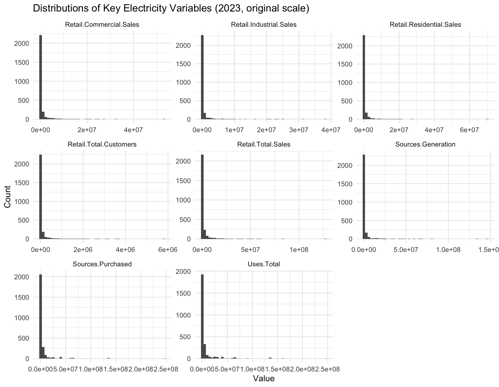
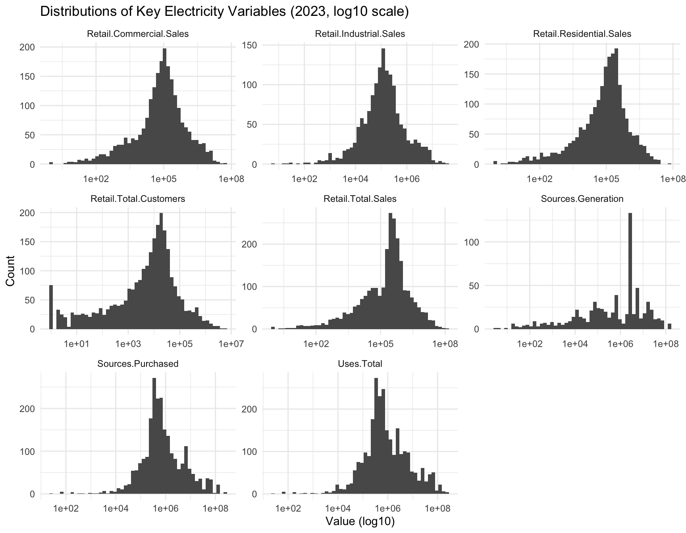
Sector composition across utilities varies widely (Figure Figure 6). Virginia’s utilities show distinct distributional patterns compared with the rest of the U.S. (Figure Figure 7).
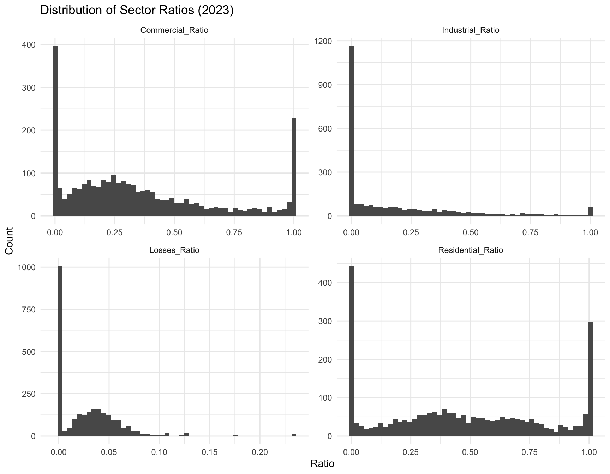

Figure Figure 8 shows that Virginia utilities generally have higher per-customer intensity levels, especially for commercial customers.
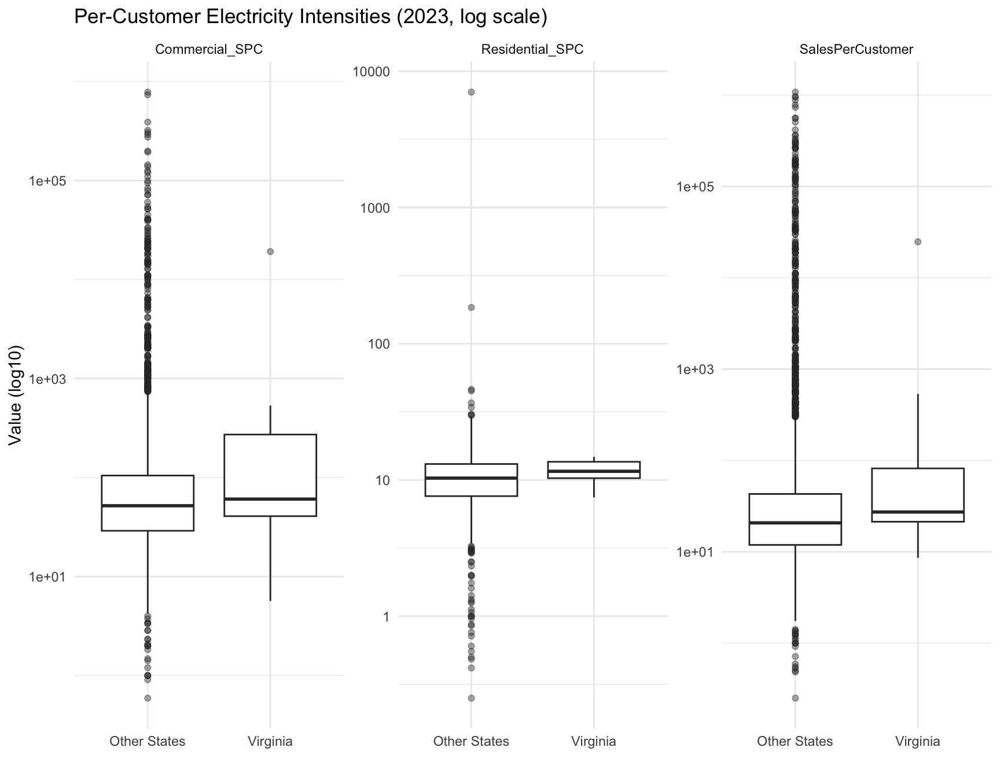
Figure Figure 9 shows how Virginia utilities compare to national utilities in overall system size and total electricity demand.
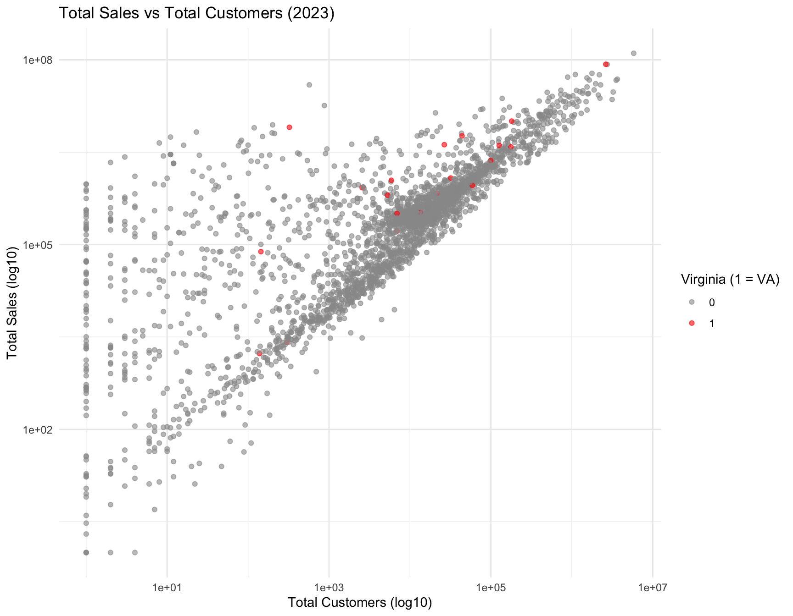
Figure Figure 10 highlights the commercial load structure and intensity for Virginia relative to other states.
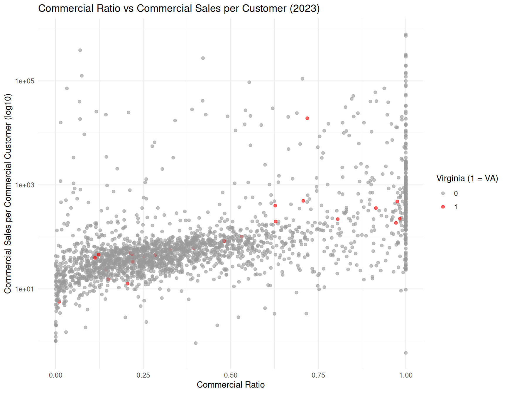
Figure Figure 11 shows how Virginia’s average electricity intensity per customer compares to the national trend from 2015–2024.

Figure Figure 12 illustrates how Virginia’s commercial load share differs from the rest of the U.S. over time.
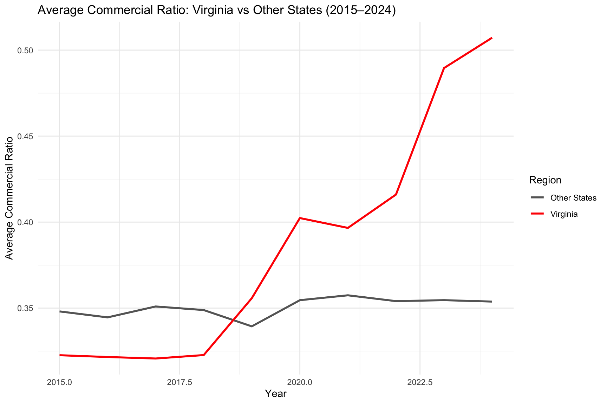
4 Research Questions
For this analysis we wanted to be able to answer the following questions:
Can we classify which utilities exhibit “data-center–like” load characteristics based on commercial intensity and per-customer electricity usage?
How does Virginia compare nationally in the proportion and concentration of high-demand utilities?
Which states show strong dominance of high-load utilities when weighted by retail sales, customer base, and commercial sales volume?
4.1 Building Classifiers
In this section we explore methods that will enable us to classify which utilities exhibit “data-center–like” load characteristics based on commercial intensity and per-customer electricity usage. In particular we look at various models including logistic regression, KNN, trees and random forests that will later enable us to not only identify utilities for the year we trained on but also generalize to other years. And lastly we look at some clustering methods using PCA and K-means.
For all models we split our data into training and test sets using a 20% hold out for testing. We set a random seed of 123 which should allow us to have consistent results. We also use our featurize method to do feature engineering yielding out high demand characteristic features mentioned in the Data section.
Figure Figure 13 shows the distribution of high demand utilities across the country for 2023. This is after we do feature engineering on our data set. As you can see there are a very small number of high demand utilities.
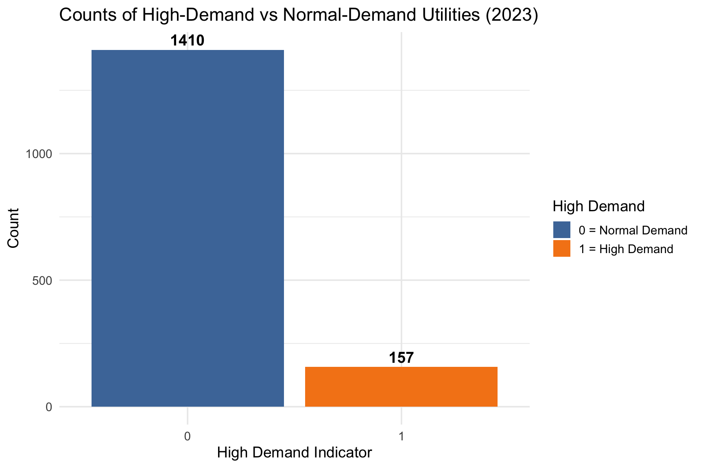
Figure Figure 14 illustrates how each of our feature engineered predictor variables of Commercial_Ratio, Commercial_SPC, Losses_Ratio, and SalesPerCustomer are highly skewed without any data transformations.
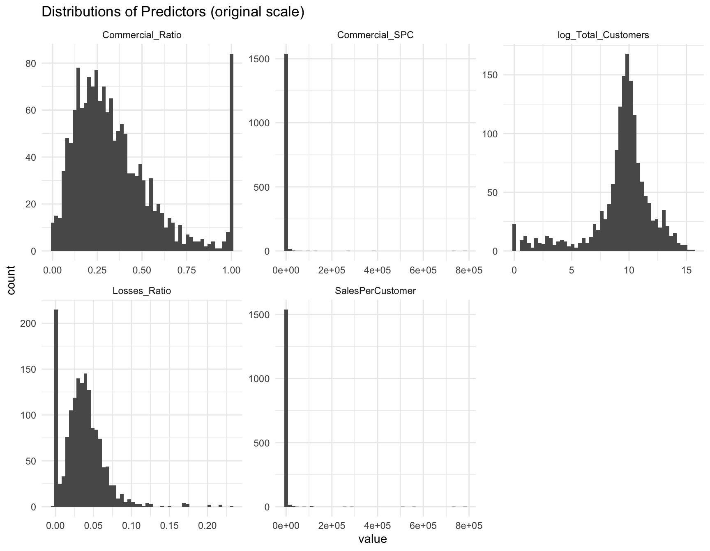
Figure Figure 15 now shows that with a log10 transformation, our feature engineered predictor variables all exhibit much more clearer and interpretable distributions.

Figure Figure 16 displays boxplots of our 5 predictors, separated by demand class. Note that while observing these boxplots, we can see that the high demand class is often correlated with much higher average Commercial_Ratio values, as well as lower average Losses_Ratio and log_Total_Customers values.
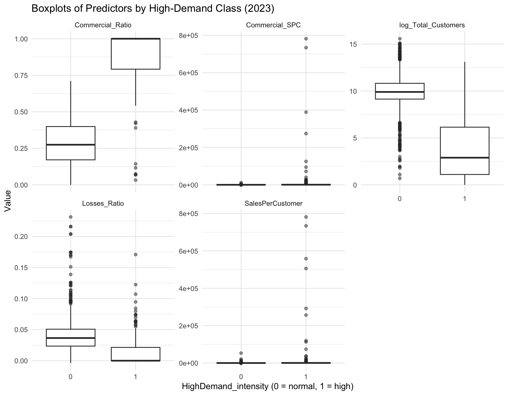
4.1.1 Logistic Regression
We first look at the unpenalized logistic regression model. This model attempted to estimate how well our utility characteristics predict whether a utility falls into the high demand or high intensity distribution (HighDemand = 1). Although the model achieved high classification accuracy, the coefficient estimates were extremely large, indicating numerical instability. This occurs when predictors nearly perfectly separate HighDemand from non-HighDemand utilities. In such cases, the logistic maximum likelihood estimator pushes coefficients toward infinity, producing inflated parameter estimates and artificially tiny p-values. This makes interpreting Model Equation 1 difficult.
Due to this instability, the individual coefficients cannot be interpreted in terms of effect sizes, odds ratios, or directionality. The model is useful only as a classifier but not as an explanatory model. The extreme magnitudes also reflect high multicollinearity among engineered intensity variables, differences in scale, and the presence of many dummy variables for utility type categories. These limitations motivate the use of penalized logistic regression or simpler composite scoring methods for more stable and interpretable results which we will explore later.
See the results of this model in Table 1.
As shown in Model Equation 1, the probability of a utility being classified as high-demand depends on several structural and commercial intensity features.
\[ \begin{aligned} \Pr(Y_i = 1 \mid X_i) &= \frac{1}{1 + \exp(-\eta_i)} \\ \\ \eta_i =\; &\beta_0 + \beta_1\,\text{Commercial Ratio}_i \\ &+ \beta_2\,\text{Sales per Customer}_i \\ &+ \beta_3\,\text{Commercial SPC}_i \\ &+ \beta_4\,\text{Losses Ratio}_i \\ &+ \beta_5\,\log(\text{Total Customers}_i) \\ &+ \beta_6\,\text{is VA}_i \\ &+ \sum_k \gamma_k\,\text{Utility Type}_{ik} \end{aligned} \tag{1}\]
| 0 | 1 | |
|---|---|---|
| 0 | 274 | 6 |
| 1 | 1 | 33 |
| Classification.Accuracy |
|---|
| 0.9777 |
The standardized logistic regression model Equation 2 replaces the raw intensity variables with their z-scores while keeping the same outcome (HighDemand_intensity) and covariates (is_VA and Utility.Type). Standardization improves numerical conditioning and makes predictors comparable in principle, but in this case the fitted model still shows extremely large coefficient estimates and tiny p-values for all terms. This indicates that the underlying problem has not been resolved.
\[ \Pr(Y_i = 1 \mid X_i) = \frac{1}{1 + \exp(-\eta_i)} \]
\[ \begin{aligned} \eta_i =\; &\beta_0 + \beta_1\,z\!\left(\text{Commercial Ratio}_i\right) + \beta_2\,z\!\left(\text{Sales per Customer}_i\right) \\ &+ \beta_3\,z\!\left(\text{Commercial SPC}_i\right) + \beta_4\,z\!\left(\text{Losses Ratio}_i\right) + \beta_5\,z\!\left(\log(\text{Total Customers}_i)\right) \\ &+ \beta_6\,\text{is VA}_i + \sum_k \gamma_k\,\text{Utility Type}_{ik} \end{aligned} \tag{2}\]
As with the unstandardized model, this standardized specification achieves high classification accuracy on the test set (about 97.8% see Table 2), but the individual coefficients cannot be interpreted as meaningful effect sizes or odds ratios. The model is functioning as an overfit classifier rather than a stable explanatory model. In practice, this motivates relying on penalized models, simpler composite indices, and descriptive comparisons.
| 0 | 1 | |
|---|---|---|
| 0 | 274 | 6 |
| 1 | 1 | 33 |
| Classification.Accuracy |
|---|
| 0.9777 |
To address the instability observed in the unpenalized logistic regression models, we fit a Ridge-penalized logistic regression using cross-validation. Ridge regression introduces an L2 penalty on the magnitude of the coefficients, shrinking them toward zero and preventing the divergence that occurred in the raw and standardized models. We trained the model using 10-fold cross-validation, which automatically selects the value of the penalty parameter \(\lambda\) that minimizes cross-validated deviance.
The Ridge model produces well-behaved coefficients and yields more reliable out-of-sample predictions. Unlike the previous models, Ridge does not aim to provide easily interpretable coefficients penalization introduces bias in exchange for substantial variance reduction but it provides a more stable and generalizable classifier. See Table 3.
Classification performance on the test set remains very strong, with an accuracy near 97–98%, similar to the unpenalized models. However, because the coefficients are shrunk and closely correlated predictors share weight, Ridge should be interpreted as a predictive model, not an explanatory one.
| 0 | 1 | |
|---|---|---|
| 0 | 275 | 17 |
| 1 | 0 | 22 |
| Classification.Accuracy |
|---|
| 0.9459 |
The Table 4 shows a comparison of the 3 different logistic classifier models.
| Model | Training.Issues | Interpretability | AIC | Test.Accuracy | Key.Notes |
|---|---|---|---|---|---|
| Raw Logistic Regression | Severe separation; coefficients explode | Poor (coefficients meaningless) | 604.7 | 0.9777 | Not reliable for inference; unstable estimates |
| Standardized Logistic Regression | Still unstable; separation persists | Poor (scaled version of same issue) | 604.7 | 0.9777 | Standardization alone did not fix the problem |
| Ridge Logistic Regression | Stable; L2 penalty prevents divergence | Moderate (penalized, but stable) | NA | 0.9459 | Best predictive model; generalizes well |
4.1.2 Tree Classifier
Next, we created a tree classifier to predict high-demand utility status using key operational and customer predictors, including Commercial_Ratio, SalesPerCustomer, and Commercial_SPC. This tree model identifies decision rules that split the data into increasingly homogeneous groups, and its structure was visualized for interpretability, as shown in Figure Figure 17. Performance was evaluated on a test dataset using a confusion matrix and overall accuracy, comparing predicted classes with actual outcomes. See Table Table 5.
Our tree classifier shows that Commercial_Ratio and Commercial_SPC are the strongest determinants of high-demand classification. The confusion matrix indicates only three misclassifications, resulting in an extremely high accuracy of over 99%, and the model effectively separates high-demand from normal-demand utilities with simple rules. A key benefit of this method is its easy interpretability; however, a notable drawback is that classification trees can be sensitive to small changes in data, which may reduce their stability.

| 0 | 1 | |
|---|---|---|
| 0 | 273 | 1 |
| 1 | 2 | 38 |
| Classification.Accuracy |
|---|
| 0.9904 |
4.1.3 Random Forest
When compared to a single tree classifier, a random forest classification approach reduces variance and improves predictive stability. We constructed a random forest model that predicts high-demand utility status using operational and customer predictors, including Commercial_Ratio, SalesPerCustomer, Commercial_SPC, Losses_Ratio, log_Total_Customers, is_VA, and Utility.Type. The model was trained using 500 decision trees, with each tree built from a bootstrap sample of the training data and a randomized subset of predictors considered at each split. Variable importance measures were generated to highlight the most influential predictors, as shown in Figure Figure 18. The fitted model was then used to classify observations in the test dataset, and confusion matrix and an accuracy measure were computed to evaluate classification performance. See Table Table 6.
The model’s out-of-bag error rate was extremely low (0.4%), indicating strong performance during training. Test results similarly reflect high predictive accuracy, with only four misclassifications out of the full test set and an overall accuracy of about 98.7%. The confusion matrix shows strong ability to correctly identify both high-demand and normal-demand utilities, demonstrating that the random forest generalizes well. Overall, the method provides robust and reliable classification with advantages such as reduced overfitting and strong predictive accuracy, though it is less interpretable than our simpler single tree classifier.

| 0 | 1 | |
|---|---|---|
| 0 | 273 | 2 |
| 1 | 2 | 37 |
| Classification.Accuracy |
|---|
| 0.9873 |
4.1.4 KNN
K-Nearest Neighbors (KNN) analysis begins by selecting predictors and standardizing them using the mean and standard deviation calculated from the training data. This ensures that all features contribute equally to the distance calculations used by KNN. The standardized training data and corresponding class labels (HighDemand_intensity) are then used to classify each observation in the standardized test set by identifying the k=5 closest training points in feature space, and assigning the majority class among those neighbors. Finally, predictions are compared with actual test labels to generate a confusion matrix and accuracy measure, as shown in Table 7.
The results show that the model correctly classified nearly all observations, incorrectly classifying only 10 out of 314 cases and achieving an accuracy of about 96.8%. The confusion matrix also indicates no false positives, suggesting the classifier is conservative and highly accurate for the High Demand class.
| 0 | 1 | |
|---|---|---|
| 0 | 275 | 10 |
| 1 | 0 | 29 |
| Classification.Accuracy |
|---|
| 0.9682 |
4.1.5 PCA and K-means Unsupervised Approach
Principal Component Analysis (PCA) was used to identify the dominant structural patterns in the engineered utility features. This approach is non-parametric and unsupervised so cannot be compared to other models explored. However, it can give us more insight into various patterns within the data.
The first two principal components explained a large share of total variance, indicating that most variation in utility intensity can be summarized in two latent dimensions. See the PCA Scree Plot Table 8.
Just for reference:
PC1 = Commercial intensity axis i.e. Commercial Ratio & Log(Total Customers)
PC2 = Customer scale axis i.e. SalesPerCustomer & Commercial SPC

In the PCA scatter plot Table 9, high‐demand utilities tend to occupy distinct regions of PC space, demonstrating that the engineered ratios and per-customer metrics capture meaningful behavioral differences. The plot shows High-demand utilities are far right on PC1. Virginia utilities are spread out and not concentrated in the high-intensity clusters.

K-means clustering (see Table 10) applied to the first three PCs further revealed that utilities naturally group into clusters corresponding to intensity characteristics. One cluster contained a disproportionate share of high-demand utilities, confirming that their behavior is structurally different from typical utilities. When examining Virginia utilities, several appear near the edges of clusters, suggesting that Virginia’s utilities exhibit more extreme or atypical load patterns relative to national norms. PCA + K-means shows Virginia does NOT cluster with high-intensity utilities. Only Dominion and NoVA co-ops show mild PC1 shifting — but not enough to enter the high-intensity group.
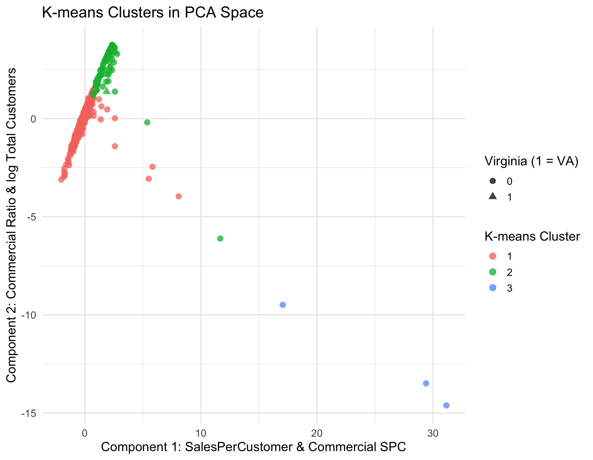
Overall, PCA reveals that Virginia utilities do not form a distinct high-intensity cluster. Instead, they occupy mid-range positions in the commercial-load space, consistent with a mixed customer base rather than pure commercial concentration.
4.1.6 Model Comparison Summary
Both ridge logistic and random forest models reliably identify utilities with unusually intense commercial electricity usage. See Table 11.
| Model | Accuracy | Notes |
|---|---|---|
| Logistic Regression (Raw) | 0.9777 | Coefficient explosion; separation issues |
| Logistic Regression (Scaled) | 0.9777 | Still unstable but standardized |
| Ridge Logistic Regression | 0.9459 | Most stable logistic model; good generalization |
| Classification Tree | 0.9904 | Low-variance, simple interpretable model |
| Random Forest | 0.9873 | Highest-performing tree-based model |
| KNN (k = 5) | 0.9682 | Sensitive to scaling; depends on local structure |
4.2 Predictive Modeling of High-Load Utility Distribution and State-Level Dominance
Now that we have built several models we want to utilize those models to answer our remaining research questions:
- How does Virginia compare nationally in the proportion and concentration of high-demand utilities?
- Which states show strong dominance of high-load utilities when weighted by retail sales, customer base, and commercial sales volume?
4.2.1 Methodology
To answer these questions, we first considered our trained ridge-penalized logistic regression model trained on 2023 utility-level data to classify each utility as either high-demand or normal-demand based on our engineered intensity features. We then applied this fitted model, along with a random forest classifier, to out-of-sample years (2018 and 2023) by re-featurizing the EIA-861 data for each year and carefully aligning factor levels and matrix columns with the original training set. This produced a combined dataset (classified_all) containing predicted high-demand labels for every utility, year, and state. From this, we constructed state-level summaries:
the proportion of utilities classified as high-demand (to measure concentration), and
a composite Data Center Load Index (DCLI) Equation 3 that averages the share of total retail sales, customers, and commercial sales served by high-demand utilities (to measure dominance). The resulting state-level proportions and DCLI values were then visualized to compare Virginia’s position to that of other states.
\[ \text{DCLI}_s = \frac{ \left( \frac{\text{HighSales}_s}{\text{TotalSales}_s} \right) + \left( \frac{\text{HighCustomers}_s}{\text{TotalCustomers}_s} \right) + \left( \frac{\text{HighCommercialSales}_s}{\text{TotalCommercialSales}_s} \right) }{3} \tag{3}\]
Where:
- \(\mathcal{U}_s\) = set of all utilities in state \(s\)
- \(\mathcal{H}_s \subset \mathcal{U}_s\) = subset of high-demand utilities in state \(s\)
- Sales = total annual retail electricity sales
- Customers = total annual number of customers
- CommSales = total annual commercial-sector electricity sales
4.2.2 Results
As can be seen in Figure 19, across all states, we find that Virginia does not emerge as the single most extreme state in terms of the number of utilities classified as high-demand. Instead, it ranks roughly tenth, placing it in the top ten nationally. This means that Virginia’s utility mix is unmistakably more “high-intensity” than that of the typical U.S. state, but several states exhibit even higher concentrations of load-intensive utilities. These findings indicate that while Virginia is a key center of high-demand electricity usage, it is not unique in having utilities that show strong commercial and per-customer intensity profiles.

However, simple utility counts do not reflect overall dominance, because not all utilities are equal in size or influence. To address this, we constructed the Data Center Load Index (DCLI) a composite metric averaging the retail-sales-weighted, customer-weighted, and commercial-sales-weighted share of total load served by high-demand utilities. This index captures not just how many high-demand utilities a state has, but how important they are to the state’s power demand. As can be seen in Figure 20 under the DCLI, Virginia again appears in the upper tier of states, but is outpaced by a handful of states where one or two utilities dominate nearly the entire statewide load. Importantly, several of these top-ranked states are not traditional data center hubs, suggesting that our intensity-based classification is detecting a broader category of industrial and commercial high-load behavior not only hyperscale data centers.

4.2.3 Discussion & Limitations
The DCLI reveals why Virginia ranks highly even though it has relatively few high-demand utilities. Virginia’s electricity system is anchored by a small number of extremely large utilities, most notably Dominion Energy and NOVEC. If one of these utilities is classified as high-demand, it automatically commands a very large share of total statewide sales and customers. In other words:
Virginia is not dominated by many high-demand utilities—it is dominated by a few enormous ones.
This explains Virginia’s strong DCLI ranking: high-demand load is concentrated inside a small number of massive utilities, rather than spread across many smaller ones as occurs in other states. By contrast, states like New York exhibit a high count of high-demand utilities, but these tend to be relatively small; their DCLI drops sharply once weighted by load. Other states appear at the top of the rankings due to industrial intensity where load patterns resemble the characteristics of our “high-demand” classification even though they are not data center hubs.
These findings highlight both the strength and the limits of using utility-level EIA-861 data as a proxy for identifying data-center-like demand. Because the dataset does not identify data centers explicitly, the “high-demand” class inevitably captures a mixture of true hyperscale activity and unrelated high-load commercial or industrial customers. Rather than contradicting Virginia’s well-documented role as the world’s largest data center market, the results show that when we zoom out to a national, utility-level lens, data-center-like load is part of a broader pattern of concentrated high-intensity commercial usage across the United States.
Bringing everything together, the proportional rankings and DCLI analysis provide a consistent story: Virginia stands out as one of the nation’s most high-demand states not because it has many high-demand utilities, but because the few that it does have carry enormous weight. When considering both concentration and dominance, Virginia emerges clearly as a high-intensity electricity state whose load structure reflects the presence of major hyperscale data center activity layered onto large, diversified utility territories.
5 Conclusion
After diving through in-depth analyses and providing detailed explanations for each of our research questions, let us circle back and revisit all of our research questions at once, providing some more succinct and summarizing answers to kickoff our conclusions.
Research Question 1: Can we classify which utilities exhibit “data-center–like” load characteristics based on commercial intensity and per-customer electricity usage?
- Answer Summary: By first creating a handful of engineered variables derived from the original dataset, we built a number of classifiers to identify which utilities exhibit “data-center-like,” or in other words high-demand, load characteristics utilizing multiple methodologies. After building classifiers with logistic regression, standardized logistic regression, ridge logistic regression, single tree classification, random forest, and K-nearest-neighbors approaches and comparing their models, we deduced that the ridge logistic regression model is the most stable, while the random forest model is the highest performing tree based approach, making either choice highly suitable to reliably classify utilities with unusually high demand.
Research Question 2: How does Virginia compare nationally in the proportion and concentration of high-demand utilities?
- Answer Summary: When applying our ridge logistic regression model along with a random forest classifier to the data, we find that the state of Virginia ranks roughly tenth in the nation in terms of the proportion of utilities classified as high-demand.
Research Question 3: Which states show strong dominance of high-load utilities when weighted by retail sales, customer base, and commercial sales volume?
- Answer Summary: Again utilizing our ridge logistic regression and random forest model, we then created an index that combines a state’s number of high-demand utilities and their importance to the state’s power demand. From this index, we could more accurately compare the dominance of high-load utilities between states, and we find that states of Nevada, Tennessee, Colorado, and Virginia, among other states exhibit the strongest dominance of high-load utilities, where a lower number of utilities dominate more of the state’s total load.
Furthermore, this study illustrates the broader conclusion that utility-level EIA-861 data, despite lacking explicit data-center identifiers, can still reveal meaningful data-center–like electricity demand patterns when combined with structural load metrics, machine-learning classifiers, and weighted dominance indices such as the DCLI. Our results show that Virginia consistently ranks within the upper tier of states in both the proportion and dominance of high-demand utilities, though it is not the single most extreme case nationally. Instead, Virginia’s position is driven by a small number of very large utilities whose load profiles heavily influence statewide metrics—highlighting that intensity and dominance do not always correspond to the number of high-demand utilities alone.
Key insights gained from this study include:
High-demand utility behavior is not unique to traditional data-center states; several states exhibit strong commercial or industrial load intensity unrelated to hyperscale development.
Virginia’s system stands out not because it has many high-demand utilities, but because its few high-intensity utilities represent a disproportionately large share of statewide load.
Weighted metrics such as the DCLI provide a more accurate picture of systemic dominance than simple counts of high-demand utilities.
Future considerations:
More granular data such as substation-level load, hourly consumption, or direct data-center reporting would improve classification accuracy and help isolate genuine data-center demand from other high-load sectors.
Incorporating temporal dynamics through time-series models could reveal how high-demand behavior evolves as data-center growth accelerates.
Additional feature engineering or alternative classification approaches may help reduce noise in states where industrial load patterns resemble data-center behavior.
Overall, this framework provides a scalable foundation for tracking evolving electricity demand pressures and assessing how data-center–like load patterns shape the resilience and planning needs of state-level power systems.
6 References
References
[1]
C. Six, “How did virginia become the data center capital of the world?” https://wydaily.com/latest/regional-national/2025/11/07/how-did-virginia-become-the-data-center-capital-of-the-world/; Williamsburg Yorktown Daily, Nov. 2025.
[2]
Virginia Economic Development Partnership, “The dawn of data.” https://www.vedp.org/news/dawn-data, 2019.
[3]
A. Data, “Americas data center update H1 2025.” https://digital.cushmanwakefield.com/Americas-Data-Center-H1-2025-Update/; Cushman & Wakefield, 2025.
[4]
U.S. Energy Information Administration, “Delivery to consumers – u.s. Energy information administration (EIA).” https://www.eia.gov/energyexplained/electricity/delivery-to-consumers.php; EIA, 2016.
[5]
U.S. Energy Information Administration, “EIA-861 Annual Electric Power Industry Report, detailed data files.” Online dataset, 2025. Available: https://www.eia.gov/electricity/data/eia861/
[6]
CORGIS Dataset Project, “CORGIS Electricity Dataset (2017 data) – electricity.csv.” Online dataset, version 2.0.0, 2021. Available: https://corgis-edu.github.io/corgis/csv/electricity/
[7]
U.S. Energy Information Administration, “How much electricity is lost in electricity transmission and distribution in the united states?” https://www.eia.gov/tools/faqs/faq.php?id=105&t=3, 2016.
Footnotes
A hyperscaler is a company that operates massive-scale data centers to provide large-scale cloud computing services, like computing, storage, and networking, that can be rapidly scaled to meet fluctuating demand.↩︎
https://corgis-edu.github.io/corgis/csv/electricity/↩︎
Transmission and distribution losses represent the electricity that is generated but never reaches customers. This energy is lost as heat in power lines and transformers as it travels across the grid.↩︎